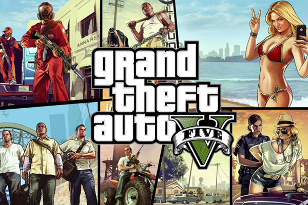
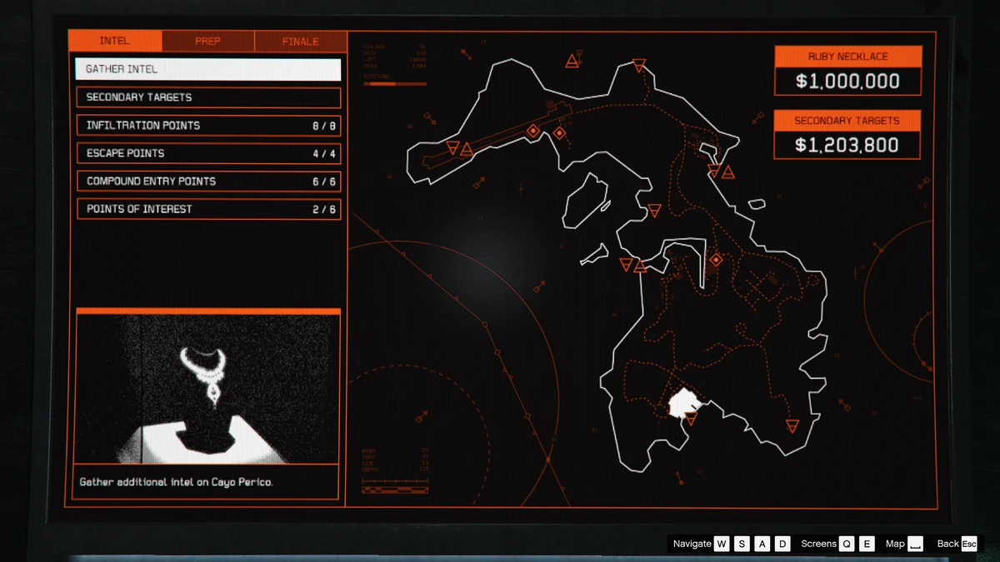
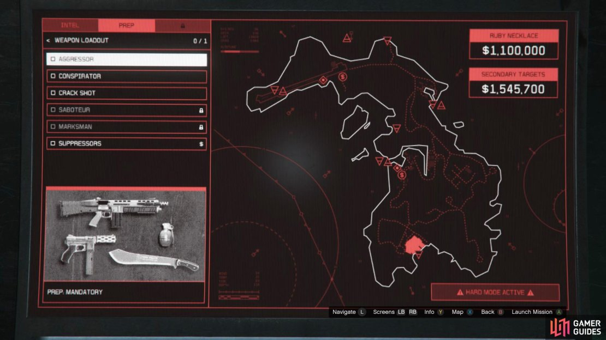
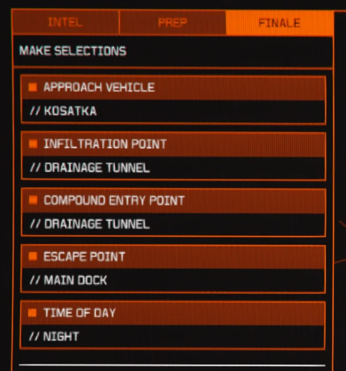
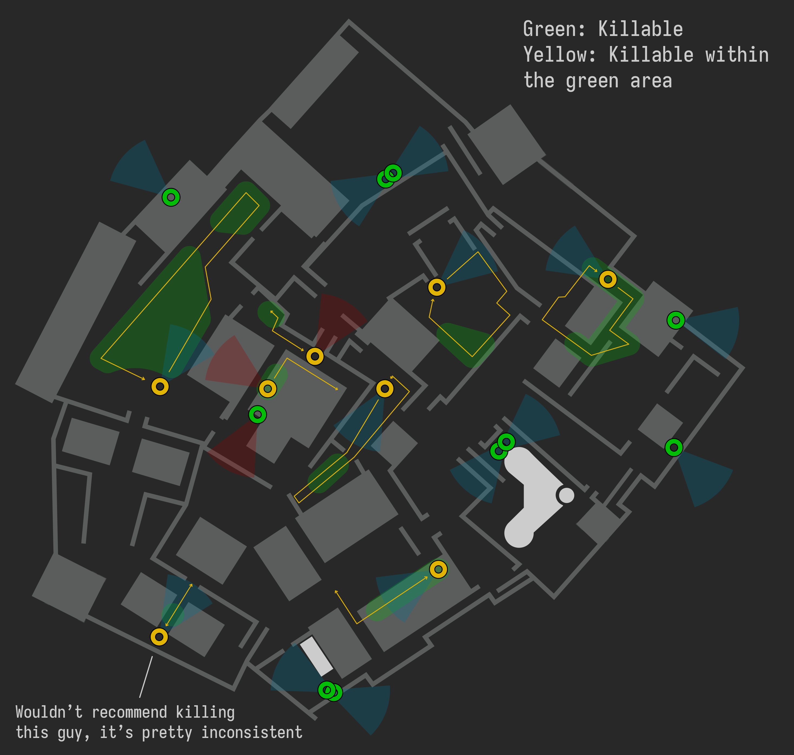
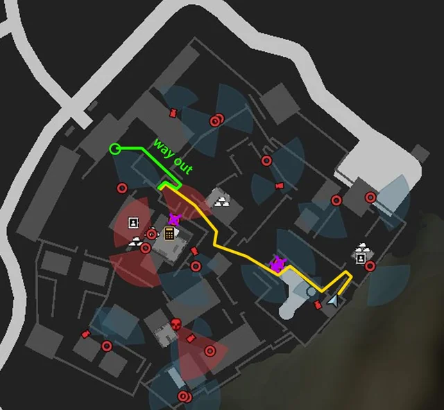
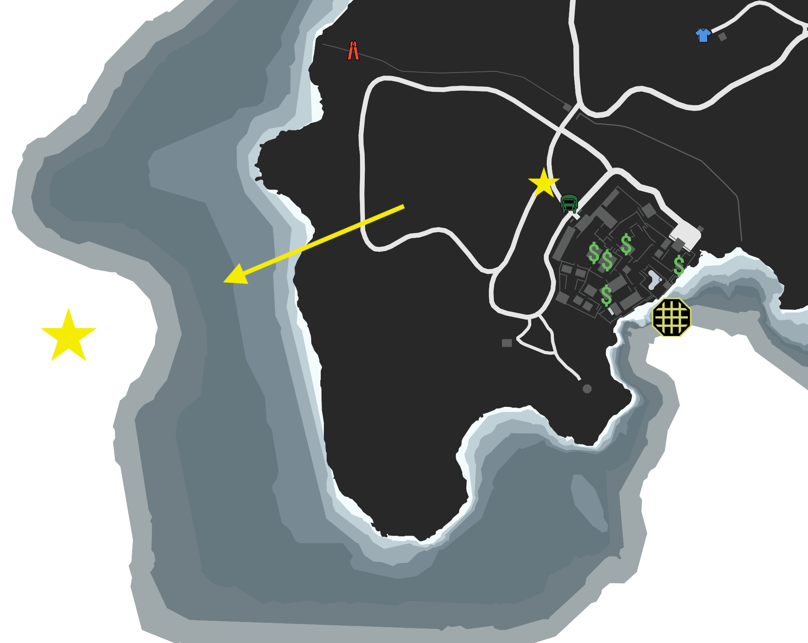

The Fastest Way To Complete The Cayo Perico Heist In GTA5.

Grand Theft Auto is a game of crime where you can do countless heists and robberies. This article will be showing you how to complete the best heist, the Cayo Perico Heist, in the fastest way possible!
So getting into the kosatka will give you a menu on the heist that looks like this. It will show your primary target and also all of the secondary targets you can steal, but first you will have to gather intel.

There are multiple preperations you have to do for this heist including the Kosatka, weapon loadout, plasma cutter, glass cutter, and sonar that you need to successfully complete it. The weapon loadout would be the Aggressor class:

And the heist setting would look like this after you complete the preps:

Once you have infiltrated the compound, you will need to know the location of the guards and their routes:

This picture will show you the exact route you need to follow and it highlights the guards you need to kill with purple:

When trying to get to the primary target you willneed to hack and complete 3 different fingerprint scans. There is a trick to this that can save over two whole minutes of the heist. So first you will want to make every slot on the fingerprint scanner the first selection, and then the order would go - 1 2 3 4 5 6 7 like this:
.jpg)
Now from there you would exit the compund like it showed on the map, and then drive off into the ocean with the star highlighted motorcycle, then escape off into the distance.

Now that you have escaped El Rubio's island, you can enjoy your 1-1.5 million dollars that you made in 15 minutes.